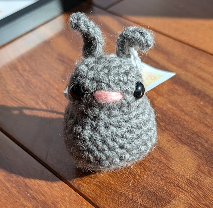
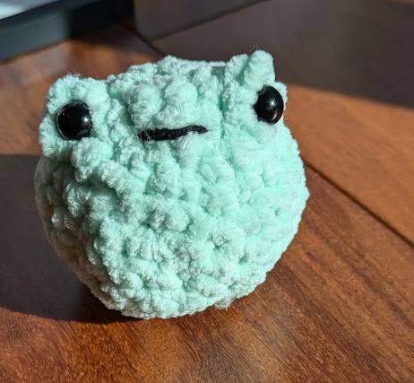

What is CrochetCorner?
CrochetCorner is something I came up when I was in 8th grade, I wanted to share my products with people so that those who can't crochet themselves can still have the opportunity to have cute crochet products with them! I try to keep my prices lower than other brands, (basing my prices off of the effort and time it takes to make it) however I handmake every product, putting love into all products, literally, because I place a little crochet heart into all my animals!
Who Am I?
Hi! I'm Sanvitti!!! Currently, I am a sophomore in high school, I've been crocheting since I was in 6th grade. I'm self taught from youtube although my interest started when I found out about my school's crochet club (in which I eventually became an officer!). I love to crochet because it relaxes me and gives me a break from school. Crochet is also a great, personal, gift to give people. It is hard to manage a buisness during school especially since it is such a time consuming one which is why my buisness took a bit of a dip when I started highschool but I made this website (by myself because I also have been coding since I was very young) to help ignite my buisness again! Thank you for supporting me!